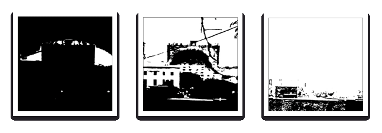
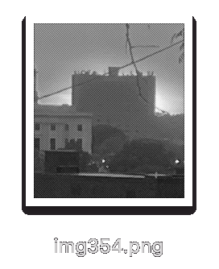
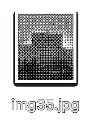

Please use Safari if the buttons don't work!
This website is a simulation tool to help visualize the relief process in a digital landscape.
Steps:
1. Upload an image via the "Choose File" button
2. Press one of the green methods to determine the printing method
3. Your woodblock(s) will be displayed on the canvas
Reduction
The reduction wood cut is a method of block printing in which each colour layer is taken from the same block. More wood is removed from the block for each layer and each colour is printed on top of the last. This means that an entire edition must be printed in one go – once you have carved into the block for the next layer, you can’t go back to print more. Because of this it is sometimes referred to as the ‘suicide printing’.
Emboss
The embossed woodcut is a method in which all values of the image are removed from the woodblock simoultaneously. The darker the values, the deeper the gauge, creating an imprint that molds the image three dimensionally. This woodblock can then be sent through the press atop a sheet of damp paper to create an subtly embossed piece. The woodblock itself can also become the artwork.
Lasercut
The Lasercut wooduct utilizes a lasercutter to cut the woodblock based on a digitized image. Typically, for one color prints, an image with a wide tonal range will be halftoned with photoshop and then brought into the lasercutter in order to establish different values with a dither dot or line.
